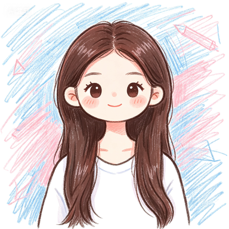

Scroll down and watch everything fall into place
First Frame
Start hereA single moment, held in place before everything begins to move.
Liang CaiYun
梁彩雲

Everything settles into place, leaving a lasting frame that feels complete.
Mo YingShi
莫颖诗

Moments stack, overlap, and reveal themselves slowly as the scroll continues.
Chen Ye
陈烨
Elements carry presence, easing in and out with balance, never rushed, never still.
Li YunLan
李韵兰
Subtle shifts and gentle transitions that build a quiet sense of rhythm as you move forward.